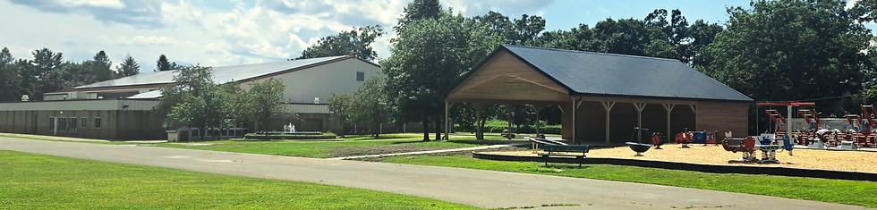

What We Accomplish
Our committee works every day to build a better Troy for all its residents.

Our committee works every day to build a better Troy for all its residents.
The City of Troy Democratic Committee works to elect qualified Democrats to every level of government — from City Council to the United States Congress — and to advocate for policies that reflect the values of our community.
We organize and support grassroots campaigns, connect volunteers with candidates, host community events, and provide resources for voters across all six council districts of Troy.
Our committee meets regularly to plan, organize, and take action on the issues that matter most to Troy residents.
See the specific issue areas the Troy Democratic Committee is focused on improving for our city.
View Our Priorities